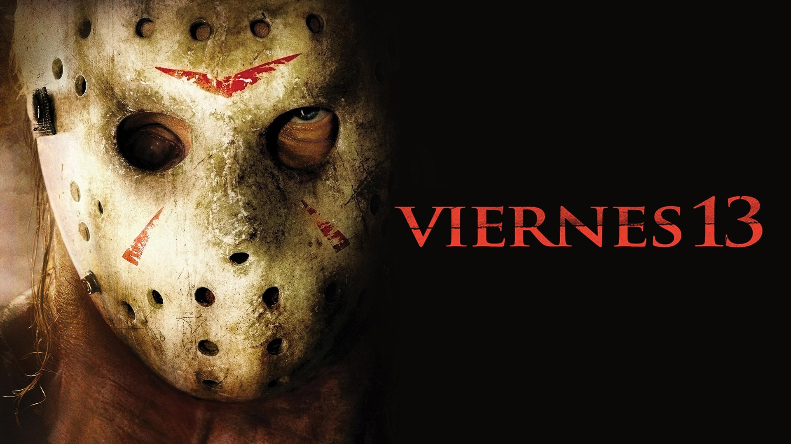
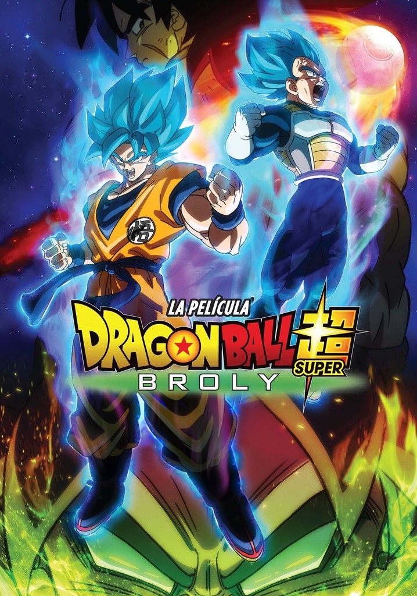
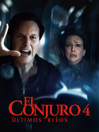
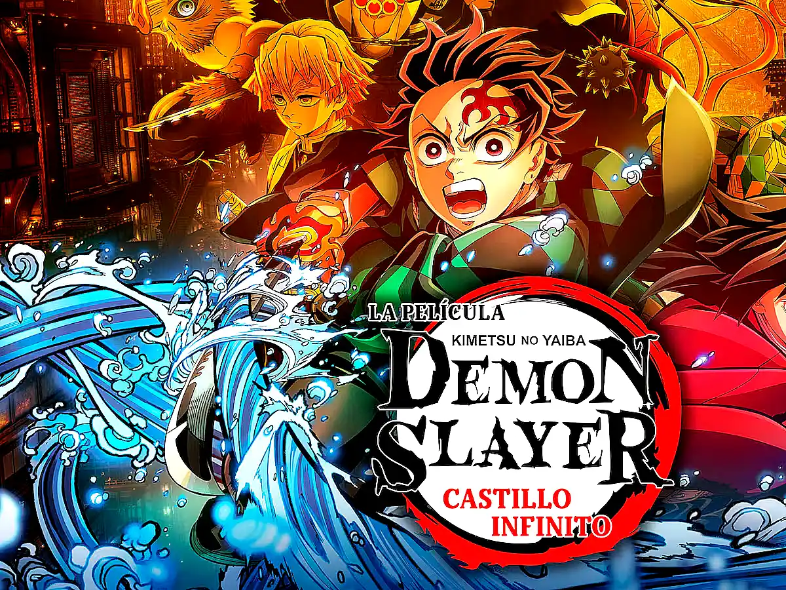

viernes 13
Sinopsis
Un grupo de jóvenes llega al campamento Crystal Lake para reabrirlo, pero pronto descubren que alguien los está siguiendo y eliminando uno por uno, desatando una noche de terror imparable.
Trailer:
Soundtrack
Dragon Ball Super: Broly
-
Trailer
-
El conjuro 4
 -
Rapidos y Furiosos 8

-
Demon Slayder Castillo Infinito

Sinopsis
Goku y Vegeta se enfrentan a Broly, un Saiyajin de poder descomunal cuyo pasado está ligado al destino de su raza. Lo que comienza como un combate intenso revela una historia marcada por la ambición de los padres y el orgullo Saiyajin, desatando una batalla que supera todos los límites.
Soundtrack
Sinopsis
Los Warren enfrentan uno de sus casos más oscuros cuando una presencia demoníaca, más fuerte y antigua que cualquier entidad previa, comienza a atacar a una familia sin motivo aparente. Mientras investigan, descubren que el mal está conectado directamente con ellos, obligándolos a enfrentar el terror más personal de sus vidas.
Trailer
Soundtrack
Sinopsis
La tranquila vida de Dominic Toretto se rompe cuando una misteriosa ciberterrorista llamada Cipher lo obliga a traicionar a su familia. Mientras Dom actúa en su contra, el resto del equipo liderado por Letty, Hobbs y el grupo de siempre— debe unir fuerzas para detener a Cipher y descubrir por qué Toretto se volvió en su contra. La misión los lleva por una serie de persecuciones explosivas, traiciones inesperadas y revelaciones que ponen a prueba los lazos familiares del grupo.
Trailer
Soundtrack
Sinopsis
El Arco del Castillo Infinito comienza cuando los Pilares y los cazadores de demonios son transportados al dominio dimensional de Muzan Kibutsuji, un laberinto vivo conocido como el Castillo Infinito. Allí, Tanjiro, Nezuko, Zenitsu, Inosuke y los Pilares se separan y deben enfrentarse a las Lunas Superiores en combates decisivos. Cada batalla pone a prueba sus límites físicos y emocionales, revelando secretos, sacrificios y el verdadero poder del enemigo. Mientras el castillo cambia constantemente de forma, la lucha por llegar hasta Muzan se convierte en la batalla más intensa y crucial para el futuro de la humanidad.